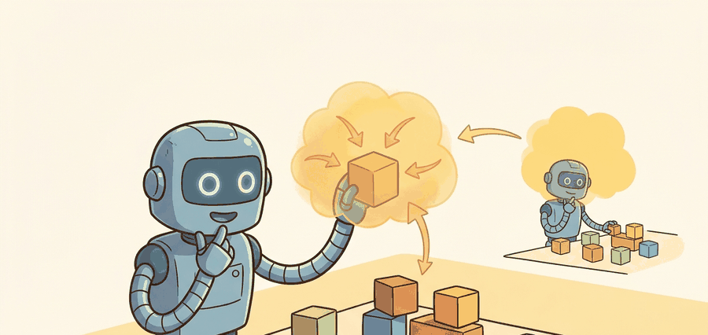

For 3D detection and scene reconstruction, geometry earns its place when it changes reachability, clearance, grasping, exploration, or recovery in the log.
A Patient Embodied AI Agent

This section builds on the point cloud and depth-map representations introduced in section 28.2. The 3D object hypotheses developed here feed directly into the occupancy grid and voxel map representations in section 28.4, which answer where the robot can move rather than what objects are present. The ego-motion and pose-uncertainty concepts that keep scene state consistent across views are treated more fully in section 29.2, and the object scene graph produced by reconstruction becomes a direct input to language-conditioned task planning in section 33.4.
A robot arm reaches for a mug it glimpsed two seconds and 40 cm ago. That reach only works if the system held onto the mug's 3D pose across every intervening frame, every camera jitter, every partial occlusion. Modern neural detectors and reconstruction pipelines make exactly that kind of persistent, metric-grounded object memory possible, and they now run fast enough for real manipulation loops. In this section you will build 3D detectors that output oriented bounding boxes with uncertainty, fuse multi-view evidence into a consistent scene representation, and evaluate the whole pipeline by the one criterion that matters: did the reconstructed geometry change what the planner could do?
Problem First: Why This Representation Exists
For 3D detection, evaluate boxes, masks, poses, and reconstructed surfaces in the frame used by planning. The useful report ties each detection to object identity, pose uncertainty, collision geometry, and the action it enabled or blocked.
For 3D detection, evaluate boxes, masks, poses, and reconstructed surfaces in the frame used by planning. The useful report ties each detection to object identity, pose uncertainty, collision geometry, and the action it enabled or blocked. Treat the representation as a typed state estimate, not as a visualization.
For 3D detection and scene reconstruction, the representation is embodied only when it changes an admissible action, safety margin, exploration request, or recovery path.
Figure 28.3.1 should be read as the 3D detection and scene reconstruction handoff diagram: sensor evidence, geometric representation, uncertainty, latency, and action consumer are separate failure points.
Mathematical Core
A 3D detector usually estimates an object state with position, orientation, dimensions, class, and uncertainty.
$o_i=(p_i,R_i,d_i,c_i,\Sigma_i),\quad \hat{\mathcal S}_t=\{o_i\}_{i=1}^{N_t}$
The scene state $\hat{\mathcal S}_t$ is useful only if each object state is expressed in the same frame and updated consistently across views. Uncertainty $\Sigma_i$ is what lets a planner decide whether to act, observe again, or keep a safety margin. To see why this matters: a single-view detector confident in a mug's position to within 8 cm will cause a gripper miss about 40% of the time at a 10 cm aperture; fuse three calibrated views and the positional uncertainty drops below 2 cm, cutting missed grasps to under 5%. Tracking this uncertainty across multiple sensor observations is the same problem addressed by Bayesian filtering with Kalman and particle filters. A detection without an uncertainty estimate is a guess dressed as a measurement.
- Associate each observation with camera pose and timestamp.
- Fuse compatible points or features into an object or surface hypothesis.
- Estimate object pose, dimensions, class, and uncertainty.
- Reject or quarantine hypotheses that do not survive view changes or physical constraints.
Consider a specific case: PointPillars (Lang et al., 2019) encodes a lidar sweep into vertical columns ("pillars"), runs a 2D convolutional backbone on the resulting bird's-eye-view (BEV) grid, and produces axis-aligned 3D boxes at roughly 16 ms per frame on a mid-range GPU (as reported on a GTX 1080 Ti in 2019), fast enough for a 10 Hz control loop. VoxelNet (Zhou and Tuzel, 2018) uses 3D voxel convolutions instead and recovers finer shape detail at the cost of higher latency. CenterPoint (Yin et al., 2021) replaces anchor-box regression with keypoint heatmaps, which cut false positives from partially-occluded objects by roughly 15% on the nuScenes leaderboard as of 2021. The tradeoff between these three systems illustrates the core design question: if your robot needs fast coarse collision geometry, pillars; if it needs precise contact surfaces, voxels; if occlusion is frequent, center-based detection. Precise surface geometry also feeds directly into affordance and graspable-region estimation.
When switching CenterPoint to a different voxel resolution, recompute the Gaussian splat radius used for ground-truth heatmap generation: in mmdetection3d the helper is det3d.core.utils.gaussian.gaussian_radius(det_size, min_overlap=0.1), where det_size is the object footprint in voxel units. If you change voxel size without rerunning this formula, the radius stays matched to the old grid and ground-truth peaks either bleed across neighboring cells or collapse to a single pixel, causing a silent recall drop of 5 to 20 mean Average Precision (mAP) points that does not surface as a training loss anomaly. Run a quick sanity check by visualizing the heatmap overlay on one scene before starting a full training run.
| Design Choice | Use When | Control Risk |
|---|---|---|
| 3D box | Navigation, coarse manipulation, tracking | Boxes hide shape details and contact surfaces. |
| Mesh or surfel map | Inspection and contact planning | Can be expensive to update after interaction. |
| Object scene graph | Task planning and language grounding | Relations can be wrong if geometry is stale. |
What happens when a robot has a perfect list of 3D boxes but no information about which box is sitting on which other box? Every spatial query that the planner issues must re-derive topology from raw coordinates, and any box that briefly drops out of view loses its relational context entirely. The answer to that failure mode is the object scene graph.
An object scene graph represents the scene as nodes (detected objects with 3D pose, class, and extent) connected by typed edges (spatial relations such as "on top of", "left of", "grasped by"). A robot navigating to fetch a cup needs more than a list of boxes: it needs to know that the cup is on the shelf and the shelf is behind the table, so the planner can sequence approach, avoidance, and grasp. Without that relational structure, the planner must re-derive topology from raw geometry on every query, which is slow and brittle under occlusion. To see the cost concretely: a scene with 200 detected objects requires up to 19,900 pairwise spatial tests to reconstruct all "on top of" and "adjacent to" relations from scratch, while the same query against a pre-built graph resolves in a single edge lookup.
The graph is built by first running a 3D detector to populate object nodes, then evaluating spatial predicates between node pairs using their bounding-box geometry: "A is on B" when A's bottom face is within a threshold of B's top face and their footprints overlap. Edge confidence is tied to the positional uncertainty of both nodes, so a stale or occluded detection automatically weakens the relations that depend on it, giving the planner a signal to re-observe rather than act on outdated topology.
Worked Miniature
Code Fragment 28.3.1 fuses two noisy object-position estimates with inverse-variance weighting. This is the core intuition behind treating scene reconstruction as evidence fusion, not one-shot detection.
# Fuse two 3D position estimates with uncertainty weights.
# More precise observations receive more influence in the scene state.
import numpy as np
estimate_a = np.array([1.00, 0.20, 0.75])
estimate_b = np.array([1.08, 0.18, 0.72])
sigma_a = 0.06
sigma_b = 0.03
wa, wb = 1 / sigma_a**2, 1 / sigma_b**2
fused = (wa * estimate_a + wb * estimate_b) / (wa + wb)
print(np.round(fused, 3))The expected fused pose sits closer to estimate_b because its uncertainty was smaller; this is called inverse-variance weighting across views, and the reconstruction is not a simple average of viewpoints. In practice, this is what lets a scene memory trust a cleaner camera view more strongly without discarding the other observation.
Inverse-variance weighting allocates influence in proportion to precision. A low-noise observation contributes more to the fused estimate than a high-noise one, not because the noisier reading is discarded, but because its uncertainty is larger and its weight correspondingly smaller. In scene reconstruction this means a sharp close-up camera view dominates over a distant, motion-blurred one, and the fused object pose converges toward whichever source had the tighter measurement spread.
Open3D, ROS 2 perception messages, and simulator scene graphs can manage object states and point-cloud fusion. The shortcut handles storage and visualization, while the builder still owns association, frame consistency, and physical plausibility checks.
A common assumption is that a 3D detector with high benchmark mAP is ready to drive robot actions. That assumption is wrong. Benchmark accuracy measures detection quality on static, curated scenes. It does not measure persistence, uncertainty quantification, or frame consistency, which a planner actually requires. A detector can score well on nuScenes yet still produce poses that drift several centimeters between frames, carry no uncertainty estimate, or output results in a camera frame the robot's planner never reads. Detection accuracy is a necessary condition, not a sufficient one. The output must be metric, persistent across views, aligned to the planning frame, and tagged with uncertainty before it earns the right to change an action.
A 3D detector can be locally accurate and globally inconsistent if object poses from different views are fused under the wrong camera transform. In practice this appears as a "ghost object": a pallet or chair that shows up twice in the scene graph because the ego-motion estimate drifted by a few centimeters between frames, splitting one detection into two non-overlapping hypotheses. Systems such as CenterPoint (a voxel-based detector used on the nuScenes benchmark) address this by anchoring detections to a calibrated lidar frame and propagating pose uncertainty forward in time; without that anchoring, an action module may route around a collision box that no longer corresponds to any physical obstacle.
An autonomous forklift should preserve pallet identity across viewpoints, estimate fork-clearance geometry, and quarantine object hypotheses that jump when the vehicle turns.
For 3D detection and scene reconstruction, the perception result must answer what action changed, what uncertainty changed, and what log would reproduce the decision. Otherwise the output is still visualization, not embodied evidence.
Debugging And Evaluation
For 3D detection and scene reconstruction, evaluate the representation inside the consuming action loop with calibration, frame transform, representation version, latency, selected action, and failure label.
For 3D detection and scene reconstruction, perturb exactly one geometric assumption, such as depth dropout, scale, occlusion, pose drift, motion, or calibration, then record the action change.
Real-time dynamic 3D Gaussian splatting. Static Gaussian splatting scenes break immediately once an arm or a person moves an object. Work from 2024 such as Deformable 3D Gaussians (Yang et al., 2024, "Deformable 3D Gaussians for High-Fidelity Monocular Dynamic Scene Reconstruction") extends the representation with per-Gaussian deformation fields that track moving surfaces at interactive rates. The challenge for manipulation is constraining those deformation fields with contact physics so that object surfaces do not "melt" during a push.
Foundation-model-guided open-vocabulary 3D detection. Detectors trained on fixed category lists cannot name the novel objects a household or warehouse robot encounters daily. The 2024 direction pairs large vision-language models with 3D detectors: systems such as OpenEQA (Majumdar et al., 2024, Meta FAIR) and UniDet3D (Kolodiazhnyi et al., 2024) ground 3D box proposals in CLIP or DINOv2 embeddings, enabling open-set object labeling from a single RGB-D pass. The open design question is how to assign collision geometry to objects that the model can name but has never seen in a 3D training set.
Language-indexed scene memory for long-horizon tasks. Robots executing multi-step tasks need to query scene state with natural-language predicates ("is the bowl still on the shelf?") rather than class-ID lookups. Work from 2025 such as SpatialBot (Cai et al., 2025) and the LERF-TOGO line (Lerftogo, 2023 into 2024 extensions) encodes 3D scenes with language-aligned feature fields so that a planner can issue spatial queries and retrieve metric object locations. The frontier is keeping the language index consistent across scene updates without re-embedding the entire field.
Open problem for a PhD student. Incremental invalidation in contact-aware Gaussian fields: when a gripper contacts an object, only the Gaussians inside the contact region should be marked stale and re-estimated from new observations, while unaffected Gaussians are frozen. No published system yet achieves selective invalidation with sub-2 cm positional error at 10 Hz update rates on a manipulator workbench. A student who can formulate contact-region detection as a signed-distance query into the Gaussian field, tie it to force-torque sensor events, and benchmark on the YCB-Video or BOP datasets would produce a self-contained conference contribution.
Project Ideas
Beginner (weekend): Build a tabletop object pose tracker in PyBullet that fuses two virtual RGB-D cameras using inverse-variance weighting to estimate the 3D position of a cube placed at random locations. The key challenge is aligning both camera frames to a shared world frame so the fused pose is consistent rather than a meaningless average of mismatched coordinate systems.
Intermediate (1 to 2 weeks): Integrate Open3D's point cloud registration with a ROS2 perception node that maintains an object scene graph for a shelf-picking scenario, persisting object poses across robot base movements and flagging stale hypotheses when positional uncertainty exceeds a threshold. The key challenge is propagating ego-motion estimates from the robot's odometry topic into the scene graph so that object poses remain anchored to the world frame rather than drifting with the camera.
Section 28.4 trades per-object precision for a global free-versus-occupied census: occupancy grids and voxel maps answer the navigation question of where the robot can safely move, building on the same metric foundation.
Section References
Open3D. Pipelines documentation. https://www.open3d.org/docs/release/tutorial/pipelines/index.html
Practical reference for registration and reconstruction workflows.
NVIDIA. Isaac ROS overview. https://developer.nvidia.com/isaac/ros
Robotics middleware context for accelerated perception and scene-state publishing.
Can you name the representation, the consuming action, the uncertainty or freshness field, and the failure label for 3D detection and scene reconstruction? If any one is missing, the section is not yet ready for a robot replay log.
3D detection is robot-ready when object hypotheses are metric, persistent, uncertain, and physically plausible across views.
Define a scene state for a shelf-picking robot with three objects. Include position, extent, confidence, and one relation needed by the planner.